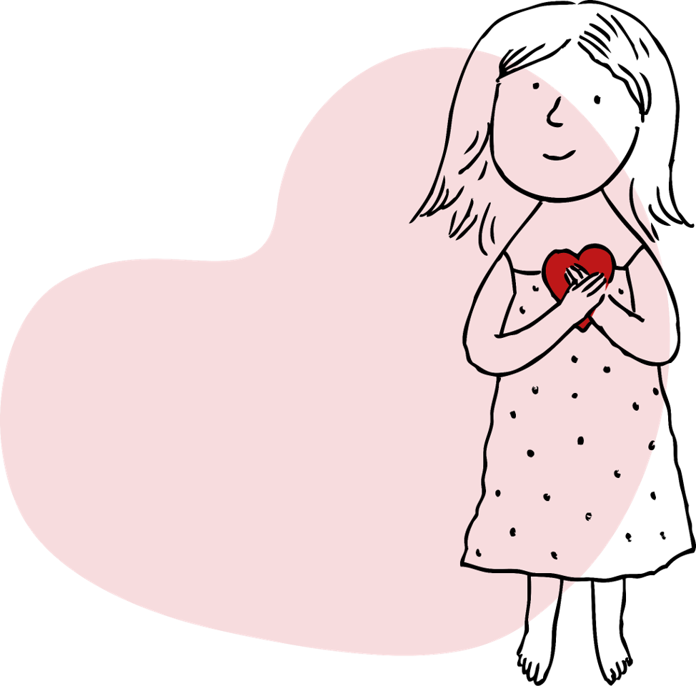
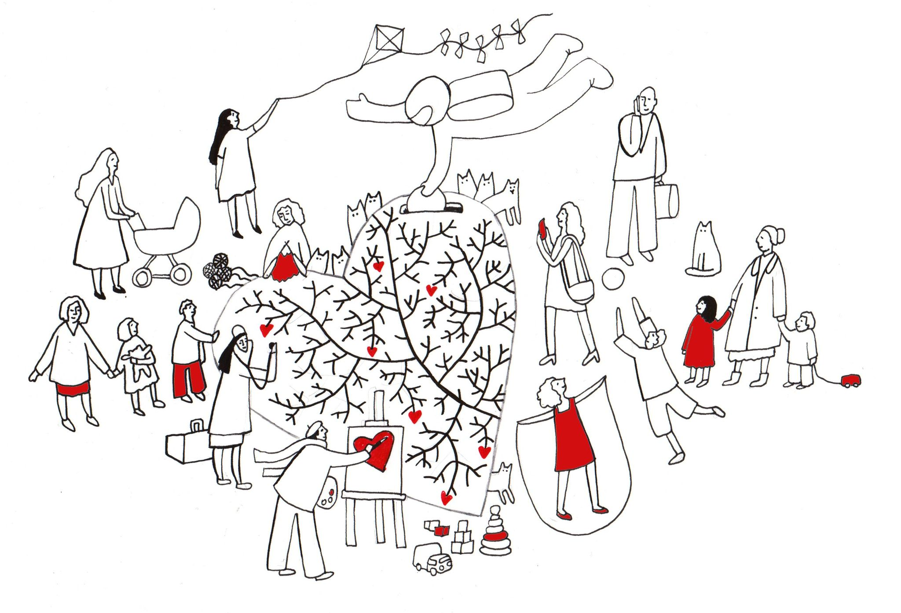
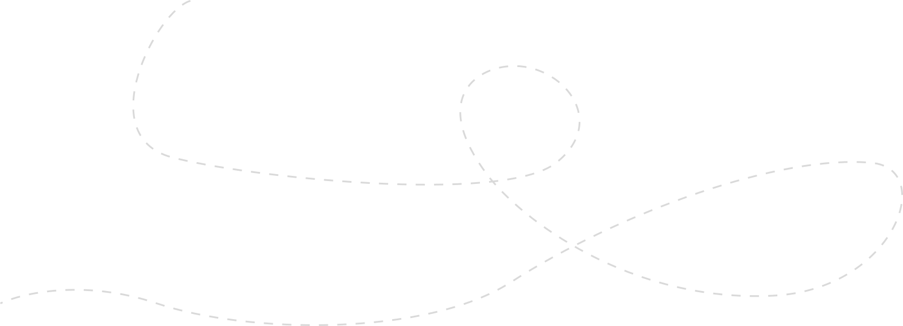
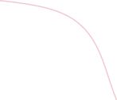
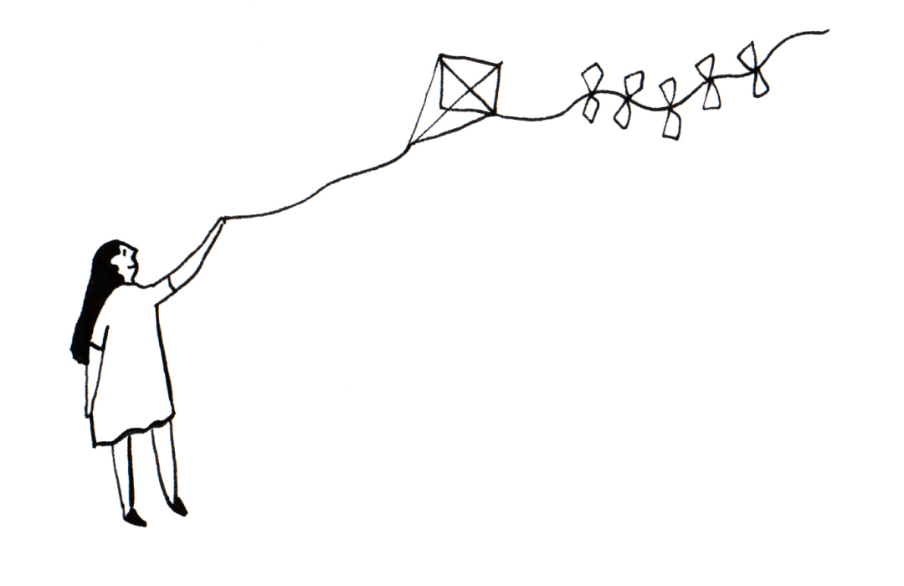

Ко Всемирному Дню сердца
фонд «Детские сердца» запускает традиционный флешмоб
#пульсуй
в поддержку детей с пороками сердца.
Сердце совершает миллиарды ударов за жизнь.
Узнай свое число за минуту
-
1
Положите руку на ровную поверхность
-
2
Надавите пальцами на лучевую артерию, которая находится на запястье
-
3 60 секунд
Посчитайте количество пульсаций за минуту
(на счетчике справа) -
4
60
2 143 581 206*
Столько ударов уже сделало ваше сердце

Не каждое сердце бьется стабильно. 1 из 100 детей рождается с пороком сердца
Ваш пульс — 72 удара в минуту

Спасибо
Сегодня ваше сердце помогло другому сердцу продолжать биться!

-
Факт 1
Норма пульса составляет 60–90 ударов в минуту, хотя само понятие «нормальный пульс» по большему счёту не больше, чем фигура речи, поскольку пульс каждого человека индивидуален
-

Факт 2
У детей пульс всегда выше. Сердце ребёнка меньше, чем сердце взрослого, поэтому детям требуется больше сердечных сокращений для прокачки объёма крови
-

Факт 3
Для спортсмена высокой квалификации пульс 40–50 ударов в минуту — норма. Так работает натренированное сердце
-
Факт 4
В положении лёжа частота сердечных сокращений замедляется, а в положении стоя и сидя кровь движется быстрее
-

Факт 5
Пульс — это важный показатель работы не только сердца, но и всего организма. Измеряйте его время от времени в спокойном состоянии. Это поможет вовремя заметить скрытые проблемы со здоровьем
За всю жизнь мое сердце сделало
2 143 581 206*
ударов. Сегодня я подарил минуту
его ритма ребенку с пороком сердца
Подари минуту сердцу #пульсуй

Одна минута способна продлить целую жизнь!